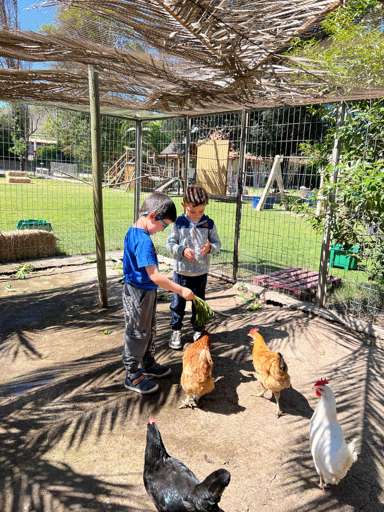
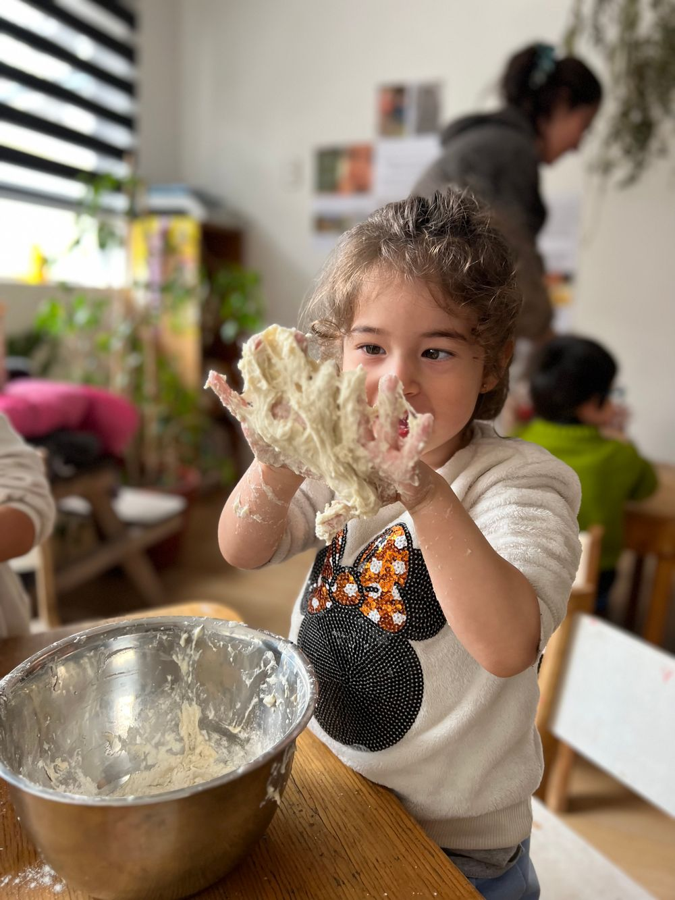
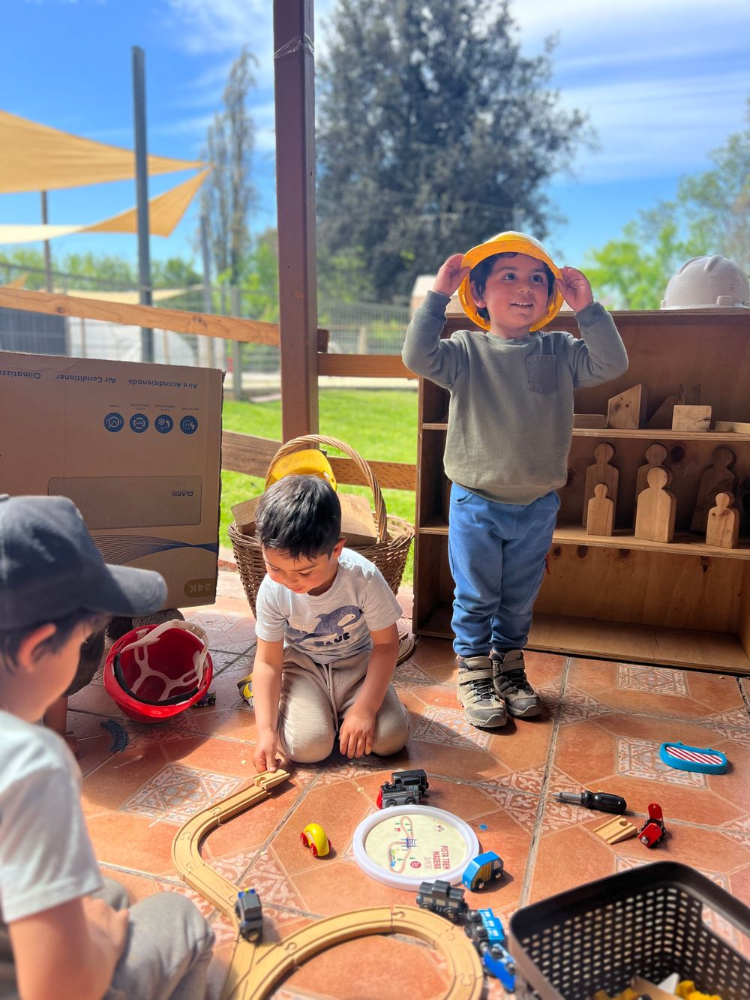
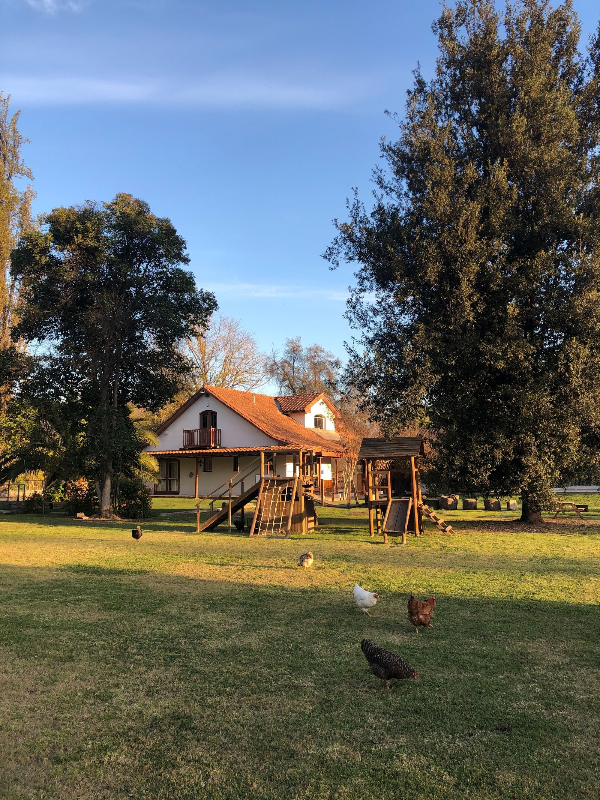
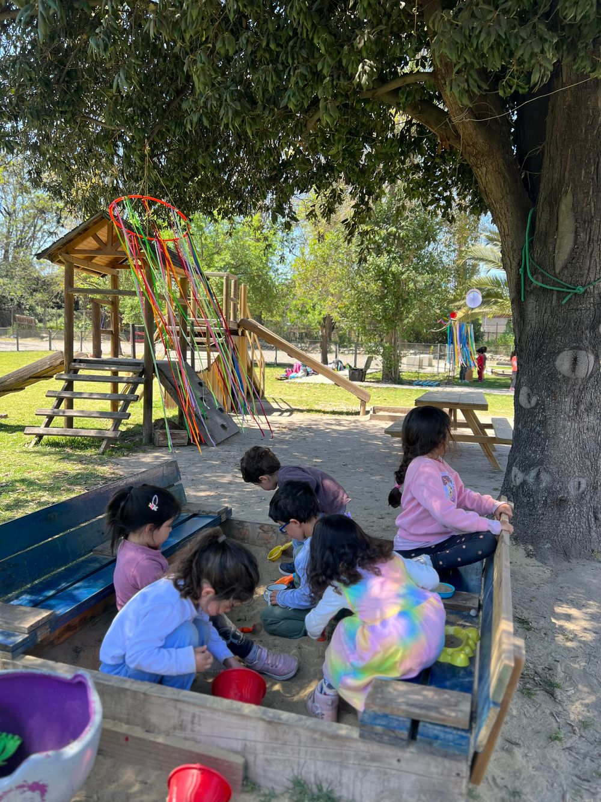

8 años acompañando a más de 200 familias con una propuesta inspirada en la filosofía Reggio Emilia en 2.500m² de naturaleza, animales y arte.

Bianca Stella es un proyecto de primera infancia inspirado en la filosofía Reggio Emilia, donde niños y niñas de 1 a 5 años co-construyen su aprendizaje acompañados por guías formadas, en un entorno de 2.500m² de naturaleza y animales.

No trabajamos para evitar emociones difíciles, sino para atravesarlas. Respetamos tiempos reales, modelamos calma, sostenemos emociones sin apurarlas. La frustración es parte del crecimiento.
Los niños aprenden desde la experiencia directa de ciclos reales. Los procesos importan más que el resultado inmediato. La espera hace visible el crecimiento.
Trabajamos la autoestima desde la construcción de la capacidad real. Permitimos el error, sostenemos la frustración, celebramos proceso más que resultado. Mejora personal, no comparación externa.
Detrás de cada experiencia en Bianca Stella hay un proceso pedagógico riguroso que respeta los tiempos y curiosidades de cada niño.
Miramos sin intervenir. Identificamos intereses, dinámicas y señales.
Registramos procesos con fotos, videos y notas. Hacemos visible el aprendizaje.
Preparamos materiales y espacios que inviten a profundizar la curiosidad.
Sostenemos el proceso sin dirigirlo. Estamos presentes, no adelante.
Cambios reales que las familias observan en los primeros meses.
Toma decisiones propias y se siente capaz
Enfrenta problemas y busca soluciones
Pregunta, investiga, no espera que le digan
Expresa lo que siente y pone límites
Conexión con la tierra, los animales y lo vivo
"El niño tiene cien lenguajes, cien manos, cien pensamientos, cien formas de pensar, de jugar y de hablar."Loris Malaguzzi — Fundador de la filosofía Reggio Emilia



En Bianca Stella, cada aula, atelier y patio ha sido pensado para responder a las necesidades reales de la infancia: moverse, investigar, crear, observar, descansar, vincularse y aprender desde la experiencia.
Vínculo, exploración sensorial, movimiento, seguridad afectiva. Rincones preparados a su medida: materiales sensoriales, espacios de calma, literatura con portadas visibles.
Lenguaje en expansión, juego simbólico, curiosidad, autonomía emergente. Rincones de exploración, investigación, construcción y calma.
Investigación, colaboración, pensamiento lógico, proyectos. Mayores niveles de autonomía y desafío. Se articula con el patio, extendiendo las experiencias al exterior.
Nuestros ateliers — espacios especializados de exploración y creación — amplían las posibilidades de cada aula.
Yoga, baile, circuitos motores, mindfulness. Conciencia corporal y autorregulación.
Retroproyector, mesas de luz, linternas. Observación, asombro, investigación sensorial.
Bloques, piezas sueltas, material reciclado. Creatividad, planificación, pensamiento espacial.
Siembra, cosecha, cuidado de gallinas. Ciclos de la vida, paciencia, responsabilidad.
Espacio flexible para propuestas temporales: arcilla, flores, tierra, materiales naturales.
2.500m² de espacio al aire libre. Parque de ruedas, pozo de arena, columpios, pasto, huerto.
No son salas rígidas. Son ambientes vivos, en permanente observación y ajuste, que responden a los procesos reales de los niños y niñas.
★★★★★
"Mi hijo se despierta con ganas de ir a su jardín, cosa que no pasó en el anterior. Avances agigantados en tan solo un mes. Se nota el amor, la alegría y el gusto por lo que realizan."
★★★★★
"Bianca Stella ha sido un verdadero refugio para nuestra familia. La transformación en nuestro hijo en 3 meses nos llena el alma. Su compromiso con la filosofía Reggio Emilia se nota en cada rincón."
★★★★★
"Mis hijos van felices, son amados y respetados. Aprenden con la interacción del entorno, sus compañeros y sus guías."
★★★★★
"Jardín grande bien distribuido, con naturaleza, pasto, tierra, gallinero. Aquí aprenden jugando y compartiendo."
Las familias solo aportan un libro para la biblioteca comunitaria y un rollo de papel mantequilla al año. Salidas pedagógicas y eventos especiales pueden tener un costo adicional.
Celebra en nuestra parcela de 2.500m² con naturaleza, animales y todo lo necesario para un día inolvidable.
Ver opciones →
English, Movimiento y Exploración BS. Para familias del proyecto y externas. Lunes, martes y miércoles.
Ver talleres →Completa el formulario y Ximena te contactará para coordinar una visita a Bianca Stella.
Si preferís una respuesta inmediata, escríbenos por WhatsApp.
☎ Escribir por WhatsApp